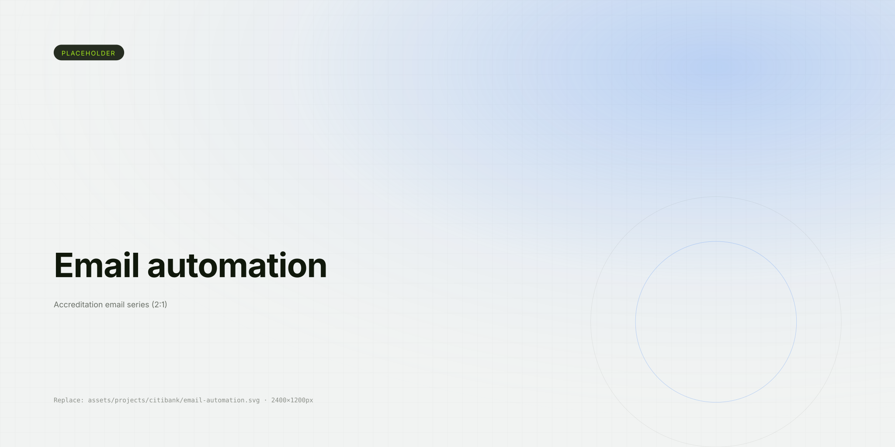
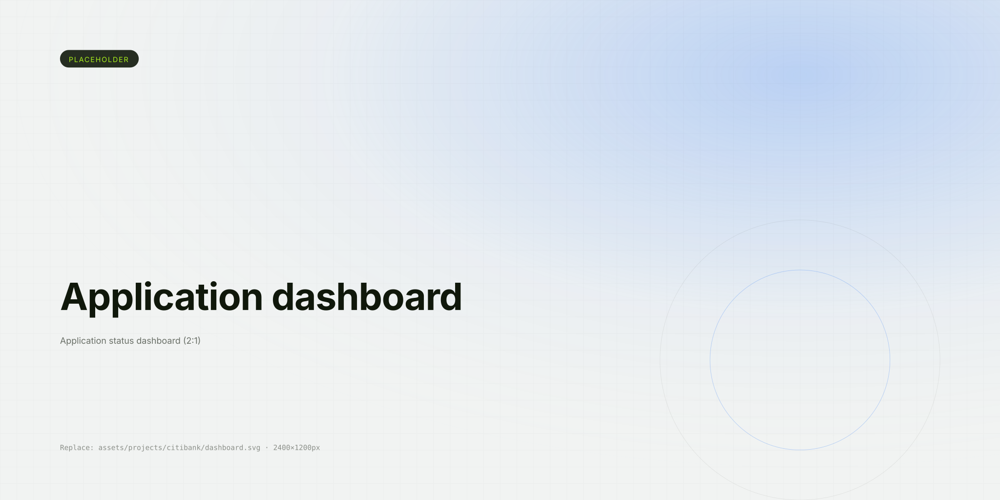

Project overview
Confirm which of the items below you personally designed or led, versus contributed to as part of the agency team. Only claim what you can stand behind in an interview.
- Online mortgage-broker accreditation form for Citibank Australia, with clear instructions and visual cues.
- Dashboard for tracking application status, with notifications for required follow-up actions.
- Confirmation page with success messages and next steps.
- Salesforce-driven email automation guiding applicants through accreditation.
- Multi-language layouts adapted for Filipino, Thai and Malay.
- Credit and debit card designs, including Mastercard promotional, seasonal and voucher cards.
- Citi World Privileges website showing location-based rewards and offers.
- Responsive email templates, EDMs, and social media banners and ads for regional campaigns.
Business context
A global bank needs consistent, compliant and locally relevant experiences across markets. Regional teams ran campaigns and digital services in different languages, all of which had to stay on-brand and work across devices and email clients.
Mortgage-broker accreditation journey
For Citibank Australia, brokers apply online to become accredited. The journey combined a guided form, a status dashboard, a confirmation page and an automated email series.
- 1Starting point“Take Your First Step”
- 2Verification“Off to a Good Start”
- 3Training & accreditation“Congratulations!”
- 4OutcomeApproved or unsuccessful
- 5Completion“You’re Now Accredited”
Each stage triggered an email so applicants always knew where they stood and what to do next — including a clear, respectful message when an application was unsuccessful.

Dashboard improvement opportunities
01Improved login experience
Make getting into the dashboard faster and clearer.
02Streamlined profile management
Fewer steps to keep broker details up to date.
03Action-button usability
Make required follow-up actions obvious.
04User feedback loop
Give applicants a way to report issues and see responses.

Multi-language & regional work
Layouts were adapted for Filipino, Thai and Malay, accounting for text length, script and reading patterns while keeping a consistent Citi visual system across markets.

Card designs & Citi World Privileges
Credit and debit card designs — including Mastercard promotional designs and seasonal holiday and voucher cards — and the Citi World Privileges website, which shows location-based rewards and offers.

Collaborative process
- Worked with developers, copywriters and creative directors.
- Multiple revision rounds based on feedback from Citibank’s global marketing teams.
- Responsive email templates built and tested for consistency across email clients.
Results & learnings
No measured outcomes are documented for this work.
If you have any outcomes (e.g. accreditation completion, campaign engagement), add them with their source. Otherwise keep this section focused on scope and learnings.
What I learned
- Designing for regulated, multi-market products means clarity and consistency matter as much as visual polish.
- Automated communication is part of the user experience — every email is a screen in the journey.